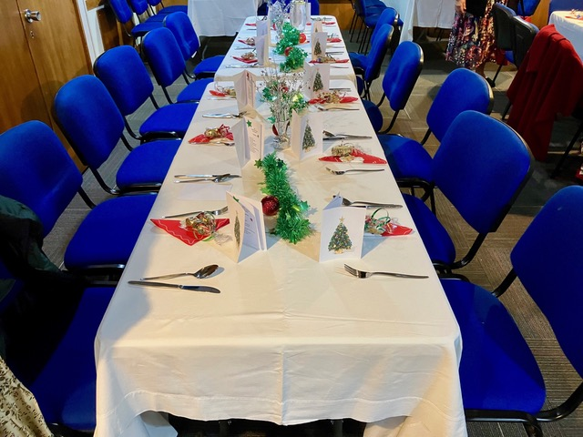
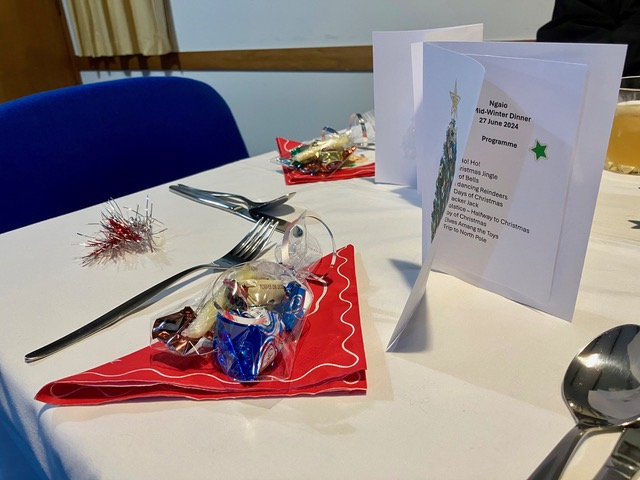
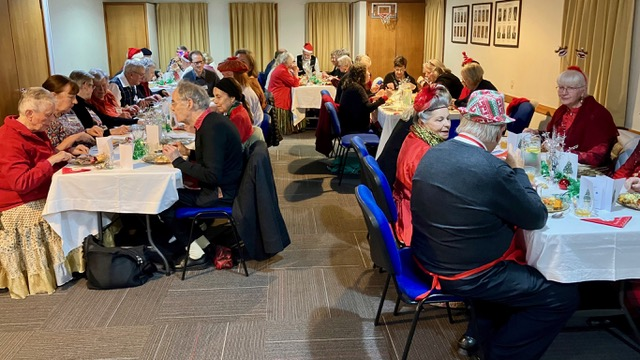
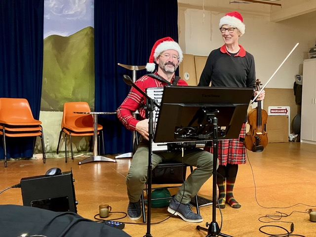
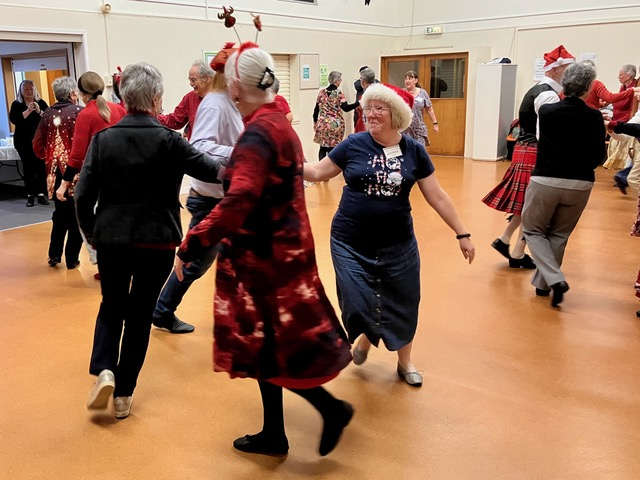
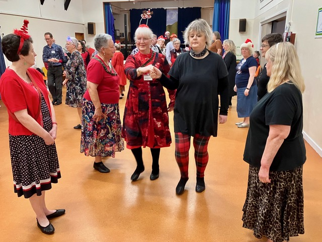

Tawa SCD Club News - 27 June 2024
Good afternoon everyone
A somewhat later than usual email this week. Mānawatea a Matariki!
Twelve Tawa members attended Ngaio Club's Midwinter Christmas dinner and dance last night. It was lovely to see Jan and Maureen Robson, who both came to enjoy the meal, the music and watch the dancing.
The meal was excellent - delicious, and well served by caterers. Our hosts had done a brilliant job of decorating the tables with Christmas tinsel and baubles, and each place setting had a little bag of sweet treats and a card with the dance programme.

Beautifully decorated tables

Each place setting had some sweet treats and the dance programme

Forty Ngaio and Tawa members enjoyed a delicious dinner
At around 8 pm, musical sounds could be heard from the stage, where Hilary and Jason were getting ready to play for the dancing. Here too, the Christmas decorations looked wonderful.

Jason and Hilary looked resplendent in their Christmas-coloured tartans and Santa hats
The dances we did all had Christmassy names, but were actually well-known dances, of which the names had been imaginatively "adapted". Hilary and Jason had adapted some of the dance tunes to Christmassy tunes as well.
- Ho! Ho! Ho! - (R) A walking round-the-room dance, danced to a number of Christmas tunes
- A Christmas Jingle (J) - a.k.a. New Year Jig, devised by Maureen Robson - and as she was there, we all applauded her.
- City of Bells (S) - a.k.a. City of Belfast
- The Dancing Reindeers (R) - a.k.a. The Dancing Bees
- 12 Days of Christmas (S) - a.k.a. 12 Coates Crescent (which is the street address of the RSCDS Headquarters n Edinburgh)
- Cracker Jack (R) - a.k.a. Pelorus Jack
- Solstice - Halfway to Christmas (S) - a.k.a The Halfway House, Petone
- Joy of Christmas (R? J?) - a.k.a. Joie de Vivre
- Elves Amang the Toys (R) - a.k.a. The Deil among the Tailors
- Trip to North Pole (R) a.k.a. A Trip to Bavaria. This is fast becoming a Ngaio favourite. Jason did not have his tuba, but both he and Hilary replaced their Santa hats, with Bavarian hats.

"Ho! Ho! Ho!" - The around-the-room walking dance

"The Dancing Reindeer (Bees)"
We all had a wonderful time. A great big thank you to Melva and the Ngaio committee, for putting on such a special evening, and thank you for inviting Tawa Club members to share this with you.
Melva and Moira - please feel free to pass on the photos to your members.
Cheers
Desiree
Desiree Patterson
tawa@dancescottish.org.nz
Secretary, Tawa SCD Club
IMG_4281
IMG_6407
IMG_6408
IMG_6410
IMG_6412
IMG_6414
IMG_6415